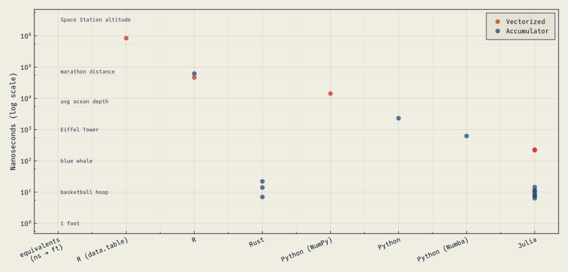

Inspired by the discussion in the ActuarialOpenSource GitHub community discussion, folks started submitted solutions to what someone referred to as the “Life Modeling Problem”. This user submitted a short snippet for consideration of a representative problem.
My take on the characteristics are that modeling life actuarial science problems breaks down to the following items:
Calculations are recursive in nature
Computationally intensive calculations
Performance matters given large volumes of data to process
Readability and usability aids in controls and risk
Recursive calculations
Many actuarial formulas are recursive in nature. Reserves are defined “prospectively” or “retrospectively”. Algorithmically, this means that intra-seriatim calculations (ie account value growth, survivorship) are not amenable to parallelism but iter-seriatim calculations would be (ie calculating multiple policy trajectories simultaneously).
Computationally intensive
Modeling is incredibly computationally complex due to the volume of data needed to process. For example, CUNA Mutual disclosed that they spin up 50 servers with 20 cores a couple of days per month to do the calculations.
Processing volume
There’s a cottage industry devoted to inforce compression and model simplifications to get runtime and budgets down to a reasonable level. However, as the capacity for computing has grown, the company and regulatory demands have grown. E.g in the US reserving has transition from net-premium reserve to integrated ALM (CFT) to deterministic scenarios sets (CFT w NY7 + others) to truly stochastic (Stochastic PBR). “What Intel giveth, the NAIC taketh away.”[^1].
So again, performance matters!
Readability and Expressiveness
Actuaries, even the 10x Actuary, aren’t pure computer scientists and computational efficiency has never been so critical that they sacrifice everything else to get it. So the industry never turned to the 40-year king of performance computation, Fortran. The syntax is very “close to the machine”. I’s a bit rough to read to anyone not well versed.
Counting the occurrences of a string looks like this in APL:
csubs←{0=x←⊃⍸⍺⍷⍵:0 ⋄ 1+⍺∇(¯1+x+⍴⍺)↓⍵}
whereas in Fortran it would be:
function countsubstring(s1, s2) result(c)
character(*), intent(in) :: s1, s2
integer :: c, p, posn
c = 0
if(len(s2) == 0) return
p = 1
do
posn = index(s1(p:), s2)
if(posn == 0) return
c = c + 1
p = p + posn + len(s2) - 1
end do
end function
Maybe more readable to the modern eye than APL, but many actuaries would still recognize what’s going on with the first code example.
Why did APL take off for Actuaries and not APL? I think expressiveness and the ability to have a language inspired by mathematical notation were attractive. It’s not pleasant to write a lot of boiler-plate simply to achieve a simple objective.
What is boiler-plate? It’s writing a lot of code supporting the main idea, but straying from a simple mathematical formulation. For example, in high performance object-oriented languages (C#/C++/Java), the idiomatic code might involve a special class. See, for example this C# code to count substrings:
using System;
class SubStringTestClass
{
public static int CountSubStrings(this string testString, string testSubstring)
{
int count = 0;
if (testString.Contains(testSubstring))
{
for (int i = 0; i < testString.Length; i++)
{
if (testString.Substring(i).Length >= testSubstring.Length)
{
bool equals = testString.Substring(i, testSubstring.Length).Equals(testSubstring);
if (equals)
{
count++;
i += testSubstring.Length - 1;
}
}
}
}
return count;
}
}
The takeaway from this point, though, is that there is a natural draw towards more expressive, powerful languages than less expressive languages, especially when dealing with mathematically based ideas. So high expressiveness is something we want from a language that solves the LMP.
Benchmarks
After the original user submitted a proposal, others chimed in and submitted versions in their favorite languages. I have collected those versions, and run them on a consistent set of hardware[^3].
Some “submissions” were excluded because they involved an entirely different approach, such as memoizing the function calls[^2].
Table 1: Benchmarks for the Life Modeling Problem in nanoseconds (lower times are better).
18×6 DataFrame
Row
lang
algorithm
function_name
median
mean
relative_mean
String15
String15
String15
Float64?
Float64
Float64
1
Julia
Accumulator
npv9
6.388
6.375
1.0
2
Rust
Accumulator
npv3
7.0
7.0
1.09804
3
Julia
Accumulator
npv8
7.372
7.375
1.15686
4
Julia
Accumulator
npv7
7.92
7.917
1.24188
5
Julia
Accumulator
npv6
9.037
9.009
1.41318
6
Julia
Accumulator
npv4
10.764
10.761
1.688
7
Julia
Accumulator
npv5
11.49
11.469
1.79906
8
Rust
Accumulator
npv2
14.0
14.0
2.19608
9
Julia
Accumulator
npv3
14.507
14.487
2.27247
10
Rust
Accumulator
npv1
22.0
22.0
3.45098
11
Julia
Vectorized
npv2
235.758
218.391
34.2574
12
Julia
Vectorized
npv1
235.322
228.198
35.7958
13
Python (Numba)
Accumulator
npv_numba
missing
626.0
98.1961
14
Python
Accumulator
npv_loop
missing
2314.0
362.98
15
Python (NumPy)
Vectorized
npv
missing
14261.0
2237.02
16
R
Vectorized
npv base
4264.0
46617.0
7312.47
17
R
Accumulator
npv_loop
4346.0
62275.7
9768.74
18
R (data.table)
Vectorized
npv
770554.0
8.42767e5
1.32199e5
To aid in visualizing results with such vast different orders of magnitude, this graph includes a physical length comparison to serve as a reference. The computation time is represented by the distance that light travels in the time for the computation to complete (comparing a nanosecond to one foot length goes at least back to Admiral Grace Hopper).
Table 2: Benchmarks for the Life Modeling Problem in nanoseconds (lower times are better).
18×6 DataFrame
Row
lang
algorithm
function_name
median
mean
relative_mean
String15
String15
String15
Float64?
Float64
Float64
1
Julia
Accumulator
npv9
6.388
6.375
1.0
2
Rust
Accumulator
npv3
7.0
7.0
1.09804
3
Julia
Accumulator
npv8
7.372
7.375
1.15686
4
Julia
Accumulator
npv7
7.92
7.917
1.24188
5
Julia
Accumulator
npv6
9.037
9.009
1.41318
6
Julia
Accumulator
npv4
10.764
10.761
1.688
7
Julia
Accumulator
npv5
11.49
11.469
1.79906
8
Rust
Accumulator
npv2
14.0
14.0
2.19608
9
Julia
Accumulator
npv3
14.507
14.487
2.27247
10
Rust
Accumulator
npv1
22.0
22.0
3.45098
11
Julia
Vectorized
npv2
235.758
218.391
34.2574
12
Julia
Vectorized
npv1
235.322
228.198
35.7958
13
Python (Numba)
Accumulator
npv_numba
missing
626.0
98.1961
14
Python
Accumulator
npv_loop
missing
2314.0
362.98
15
Python (NumPy)
Vectorized
npv
missing
14261.0
2237.02
16
R
Vectorized
npv base
4264.0
46617.0
7312.47
17
R
Accumulator
npv_loop
4346.0
62275.7
9768.74
18
R (data.table)
Vectorized
npv
770554.0
8.42767e5
1.32199e5
To aid in visualizing results with such vast different orders of magnitude, this graph includes a physical length comparison to serve as a reference. The computation time is represented by the distance that light travels in the time for the computation to complete (comparing a nanosecond to one foot length goes at least back to Admiral Grace Hopper).

Figure 1
Benchmark Discussion
Takeaway #1
There are a lot of ways to accomplish the same task and and that’s good enough in most cases
All of the submissions and algorithms above worked, and fast enough that it gave an answer in very little time. And much of the time, the volume of data to process is small enough that it doesn’t matter.
But remember the CUNA Mutual example from above: Let’s say that CUNA’s runtime is already as fast as it can be, and index it to the fastest result in the benchmarks below. The difference between the fastest “couple of days” run and the slowest would be over 721 years. So it’s important to use tools and approaches that are performant for actuarial work.
So for little one-off tasks it doesn’t make a big difference what tool or algorithm is used. More often than not, your one-off calculations or checks will be done fast enough that it’s not important to be picky. But if wanting to scale your work to a broader application within your company or the industry, I think it’s important to be performance-minded[^4].
Takeaway #2
“If all you have is a dataframe, everything looks like a join”
I’ve seen this several times in practice. Where a stacked dataframe of mortality rates is joined up with policy data in a complicated series of %>%s (pipes), inner_joins and mutates.
Don’t get me wrong, I think code is often still a better approach than spreadsheets[^5].
However, like the old proverb that “if all you have is a hammer, everything looks like a nail” - sometimes the tool you have just isn’t right for the job. That’s the lesson of the R data.table result above. Even with the fastest dataframe implementation in R, it vastly trails other submissions.
Algorithm choice
Getting more refined about the approach, the other thing that is very obvious is that for this recursive type calculation, it’s much more efficient to write a for loop (the Accumulator approach) in every language except for R (where it wants everything to be a vector or dataframe).
The difference hints at some computational aspects related to arrays that I will touch upon when discussing code examples below. The point for now is that you should consider using tools that give you the flexibility to approach problems in different ways.
Takeaway #3
Performance, flexibility, readability: pick one, two, or three depending on the language
This section ranges from objective (performance metrics) to subjective (my take on flexibility and readability). My opinions are based on using R heavily for several years ~2011-2015, Python for ~2015-2018, and then primarily switched to Julia in ~2018. I have a lot of experience with VBA, and moderate experience with Javascript, with some educational/introductory background in C, List/Racket, Mathematica, Haskell, and Java.
R
Performance
R was the slowest all-around.
Flexibility
R scores well here - non-standard evaluation lets you, essentially, inspect the written code without evaluating it. This is a nice feature that enables a lot of creativity and pleasantries (like ggplot knowing what to label the axes without you telling it).
R works in notebook environments and from a REPL.
One negative about R’s flexibility is the fact that the language is GPL licensed, meaning that there are quite a few restrictions. For example, if you distribute an application that relies on R (e.g. it becomes part of your sales platform distributed to agents) you would need to be able to provide the source code for your application to the said users[^6]. The other languages discussed on this page have much more permissive licenses.
Readability
R reads pretty easily, with very little boiler plate and terse syntax:
# via Houstonwp
q <- c(0.001,0.002,0.003,0.003,0.004,0.004,0.005,0.007,0.009,0.011)
w <- c(0.05,0.07,0.08,0.10,0.14,0.20,0.20,0.20,0.10,0.04)
P <- 100
S <- 25000
r <- 0.02
base_r_npv <- function(q,w,P,S,r) {
inforce <- c(1,head(cumprod(1-q-w), -1))
ncf <- inforce * P - inforce * q * S
d <- (1/(1+r)) ^ seq_along(ncf)
sum(ncf * d)
}
base_r_npv(q,w,P,S,r)
#> [1] 50.32483
microbenchmark::microbenchmark(base_r_npv(q,w,P,S,r))
R is the oldest of the languages commonly used in actuarial contexts and carries a lot of that weight for better or worse: over several decades, it’s accumulated a sizeable community but is left with a number of rough edges. The data scientist Evan Patterson has written a nice summary of “the good, the bad, and the ugly” of R.
Rust
Rust is a newer, statically compiled language designed for performance and safety (in the don’t let your program do memory management mistakes that crash the computer).
Performance
Rust scores well here, coming second only to Julia.
Flexibility
Rust is statically compiled (you write script, have computer run script, see results). It doesn’t have a REPL or ability to be used in an interactive way (e.g. notebook environments).
Readability
I really like the explicit function contract: you give it various floating point (f64) vectors and numbers, and it returns a float: -> f64.
Other than that it’s pretty straightforward but definitely more verbose than any of the others.
#![feature(test)]
extern crate test;
use test::Bencher;
// Via Paddy Horan
pub fn npv(mortality_rates: &Vec<f64>, lapse_rates: &Vec<f64>, interest_rate: f64, sum_assured: f64, premium: f64, init_pols: f64, term: Option<usize>) -> f64 {
let term = term.unwrap_or_else(|| mortality_rates.len());
let mut result = 0.0;
let mut inforce = init_pols;
let v: f64 = 1.0 / (1.0 + interest_rate);
for (t, (q, w)) in mortality_rates.iter().zip(lapse_rates).enumerate() {
let no_deaths = if t < term {inforce * q} else {0.0};
let no_lapses = if t < term {inforce * w} else {0.0};
let premiums = inforce * premium;
let claims = no_deaths * sum_assured;
let net_cashflow = premiums - claims;
result += net_cashflow * v.powi(t as i32);
inforce = inforce - no_deaths - no_lapses;
}
result
}
#[bench]
fn bench_xor_1000_ints(b: &mut Bencher) {
let q: Vec<f64> = vec![0.001,0.002,0.003,0.003,0.004,0.004,0.005,0.007,0.009,0.011];
let w: Vec<f64> = vec![0.05,0.07,0.08,0.10,0.14,0.20,0.20,0.20,0.10,0.04];
let p: f64 = 100.0;
let s: f64 = 25000.0;
let r: f64 = 0.02;
b.iter(|| {
// use `test::black_box` to prevent compiler optimizations from disregarding
// unused values
test::black_box(npv(&q,&w,r,s,p,1.0,Some(10)));
});
}
Python
Performance
With NumPy, Python was the second fastest Vectorized approach and 3rd place for the Accumulator loop, both cases were still more than an order of magnitude slower than the next place.
Flexibility
Python wins large points for interactive usage in the REPL, notebooks, and wide variety of environments that support running Python code. However, within the language itself I have to deduct points for the ease of inspecting/evaluating code.
What I mean by that, is that if you look at the code example below, in order to test the code you have to turn it into string and then call the timeit function to read and parse the string. In none of the other tested languages was that sort of boiler-plate required.
Python scores partial points for meta-programming: decorators (@ syntax) is syntactic sugar for macro-like modifications to functions, but Python metaprogramming is fundamentally limited by the language design.
Python has perhaps the most robust ecosystem of all the languages discussed here, but in many ways its limiting: once you get deep into an ecosystem (e.g. NumPy), you are sort of at the mercy of package developers to ensure that the packages are compatible. As a key example, many common types and data structures are not shareable between libraries: there are efforts to standardize data types/classes for better compatibility across the Python ecosystem, but may require fundamental changes to the language or ecosystem to accomplish.
On the subject of Python packages: environment and package management in Python is notoriously painful:
Python XKCD
Readability
One of Python’s seminal features is the pleasant syntax, though opinions differ as to whether the indentation should matter to how your program runs.
import timeit
setup='''
import numpy as np
q = np.array([0.001,0.002,0.003,0.003,0.004,0.004,0.005,0.007,0.009,0.011])
w = np.array([0.05,0.07,0.08,0.10,0.14,0.20,0.20,0.20,0.10,0.04])
P = 100
S = 25000
r = 0.02
def npv(q,w,P,S,r):
decrements = np.cumprod(1-q-w)
inforce = np.empty_like(decrements)
inforce[:1] = 1
inforce[1:] = decrements[:-1]
ncf = inforce * P - inforce * q * S
t = np.arange(np.size(q))
d = np.power(1/(1+r), t)
return np.sum(ncf * d)
'''
benchmark = '''npv(q,w,P,S,r)'''
print(timeit.timeit(stmt=benchmark,setup=setup,number = 1000000))
To do non standard things like benchmarking (or The benchmarking setup with Python’s timeit is definitely the most painful, needing to wrap the whole thing in a string. And then only get a single number result, without normalizing for the number of runs is very annoying.
Julia
Performance
The fastest language with both algorithms.
Flexibility
Available in a variety of environments, include the standard interactive ones like the REPL and notebooks. One key differentiator is the reactive notebook environment, Pluto.jl where notebook cells understand and interact with one-another.
Julia packages are also notoriously cross-functional, so unlike Python (e.g. NumPy) or R (e.g. Tidyverse), tightly coupled specialty-ecosystems have not evolved in Julia.
Julia is MIT licensed, as are many of the community packages (including JuliaActuary’s). This license is very permissive and is likely to cause the least issue compared with other licenses discussed on this page.
The ability to introspect code is one of Julia’s superpowers
Readability
Julia scores well here, but gets dinged in my mind for a couple of things:
all of those dots!
the weird @benchmark and dollar signs ($s)
The former is actually a very powerful concept/tool called broadcasting. Kind of like R (where everything is a vector and will combine in vector-like ways). Julia lets you both worlds: really effective scalars and highly efficient vector operations. Once you know what it does, it’s hard to think of a shorter/more concise way to express it than the dot (.).
The latter, @benchmark is a way to get Julia to work with the code itself, again kind of like R does. @benchmark is a macro that will run a really comprehensive and informative benchmarking set on the code given.
The Vectorized version:
using BenchmarkTools
q = [0.001,0.002,0.003,0.003,0.004,0.004,0.005,0.007,0.009,0.011]
w = [0.05,0.07,0.08,0.10,0.14,0.20,0.20,0.20,0.10,0.04]
P = 100
S = 25000
r = 0.02
function npv1(q,w,P,S,r)
inforce = [1.; cumprod(1 .- q .- w)[1:end-1]]
ncf = inforce .* P .- inforce .* q .* S
d = (1 ./ (1 + r)) .^ (1:length(ncf))
return sum(ncf .* d)
end
@benchmark npv($q,$w,$P,$S,$r)
And the Accumulator version:
function npv5(q,w,P,S,r,term=nothing)
term = term === nothing ? length(q) : term
inforce = 1.0
result = 0.0
v = (1 / ( 1 + r))
v_t = v
for (q,w,_) in zip(q,w,1:term)
result += inforce * (P - S * q) * v_t
inforce -= inforce * q + inforce * w
v_t *= v
end
return result
end
More flexibility, more performance from Julia
I wanted to go a little bit deeper and show how 1) Julia just runs fast even if your not explicitly focused on performance. But for where it really matters, you can go even deeper. This is a little advanced, but I think it can be useful to introduce some basics as to why some languages and approaches are going to be fundamentally slower than others.
Notes: The accumulator approach vectors and allocations talk about stack/heap? pick a faster approach and explain why it’s even faster.
Colophon
Code
All of the benchmarked code can be found in the JuliaActuary Learn repository. Please file an issue or submit a PR request there for issues/suggestions.
Hardware
MacBook Air (M1, 2020)
Software
All languages/libraries are Mac M1 native unless otherwise noted
Julia
Julia Version 1.7.0-DEV.938
Commit 2b4c088ee7* (2021-04-16 20:37 UTC)
Platform Info:
OS: macOS (arm64-apple-darwin20.3.0)
CPU: Apple M1
WORD_SIZE: 64
LIBM: libopenlibm
LLVM: libLLVM-11.0.1 (ORCJIT, cyclone)
Rust
1.53.0-nightly (b0c818c5e 2021-04-16)
Python
Python 3.9.4 (default, Apr 4 2021, 17:42:23)
[Clang 12.0.0 (clang-1200.0.32.29)] on darwin
[^2] If benchmarking memoization, it’s essentially benchmarking how long it takes to perform hashing in a language. While interesting, especially in the context of incremental computing, it’s not the core issue at hand. Incremental computing libraries exist for all of the modern languages discussed here.
[^3] Note that not all languages have both a mean and median result in their benchmarking libraries. Mean is a better representation for a garbage-collected modern language, because sometimes the computation just takes longer than the median result. Where the mean is not available in the graph below, median is substituted.
[^5] I’ve seen 50+ line, irregular Excel formulas. To Nick: it probably started out as a good idea but it was a beast to understand and modify! At least with code you can look at the code with variable names and syntax highlighting! Comments, if you are lucky!
[^6] This is not legal advice, consult a lawyer for more details.